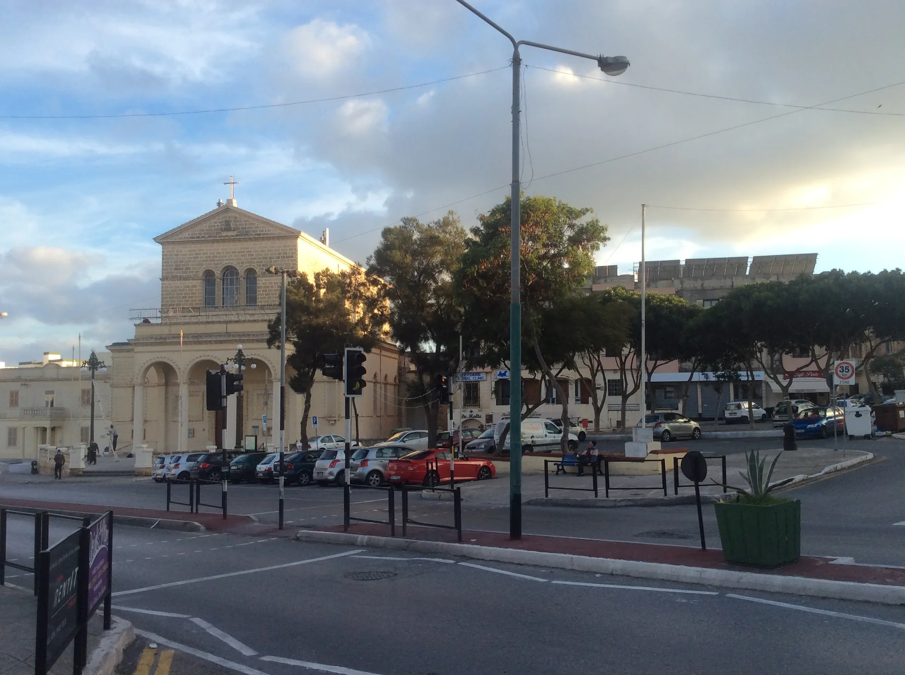

The parish church and main public spaces orient the built centre. They do not guarantee a short walk, easy parking, silence or step-free access from a particular home.
SAN ĠWANN · READ THE ADDRESS
Modern centre. Layered edges.
San Ġwann combines a modern built centre with older archaeological context and valley edges. Start with the exact street and keep neighbouring Kappara and Iklin separate when comparing homes.

ONE LOCALITY, SEVERAL CONTEXTS
Start with the street, not the broad label.
The Local Council describes San Ġwann as a largely modern suburb while documenting archaeological remains and surrounding valleys. That is useful context, but it does not make every address equally level, quiet, accessible or close to the same services.
Wied Għomor, Wied il-Ballut and Wied Għollieqa belong to the wider geography. Exact coordinates and routed geometry are needed before making access or outlook claims.
Kappara and Iklin remain separate property contexts. A shared map viewport or blended inventory label is not enough to relabel an address as central San Ġwann.
Modern and address-specific.
Residential and commercial streets form the everyday centre. Verify the official locality, entrance and street before attaching any claim about walking, parking, noise or access to a listing.
Office of the Address Registrar ↗History is broad context.
The council records archaeological remains, the Ta' Ċieda Roman tower and surrounding valleys. Those facts describe the locality; they do not place a specific property beside a site or prove public access.
Local Council geography and history ↗VERIFIED EVERYDAY EXAMPLES
Useful anchors, without a ranking.
These operator-backed examples establish everyday and dining context. They do not claim that a venue is closest or best for every home. Check current hours, stock, menus, delivery and access directly.
Lidl San Ġwann
The operator lists its store at Triq iċ-Ċiklamini, SGN 1331. Parking and services still require a current check for the visit you plan.
Operator store page ↗Okurama
The operator gives its San Ġwann location as Misraħ Lourdes. This is a sourced location example, not a rating, price or recommendation.
Okurama operator site ↗Vago
The operator gives its address as 19, Floor 2, Triq il-Fuxa, San Ġwann SGN 1308. Menus, hours and access can change.
Vago operator site ↗Parish and heritage
The council records that the present parish church was completed in 1959 and became the parish church in 1965, alongside the locality's older archaeological layers.
Local Council source ↗Primary care is a current check.
Primary HealthCare currently lists both San Gwann and Kappara in the Gżira Health Centre catchment. The separate names reinforce the need to keep their property contexts distinct. Services and opening arrangements can change, so confirm the correct point of care directly.
Kappara has its own neighbourhood context.
Continue with the separate Kappara edition for its residential streets, junction edge and Ta' Xindi heritage anchor. The linked guide keeps wider San Ġwann services clearly labelled rather than merging the two property contexts.
No straight line becomes a walking route.
This edition draws no district boundary or generic walk. Verified walking geometry, bus information, current car-traffic estimates and taxi-price observations remain separate sources and require the exact origin, destination, mode and observation time.
Load the San Ġwann overview only when you need it.
The map shows San Ġwann and nearby labels for orientation. It deliberately draws no locality border, route or journey time and loads from OpenStreetMap only after your click. Kappara and Iklin appearing in the viewport does not merge them into central San Ġwann.
San Ġwann Local Council geography and history · Office of the Address Registrar · Gżira Health Centre · Lidl San Ġwann · Okurama · Vago · Wikimedia Commons image record

No ranking, fixed opening hours, property-specific route, accessibility promise, guaranteed outlook, parking claim or locality-wide journey time is claimed.